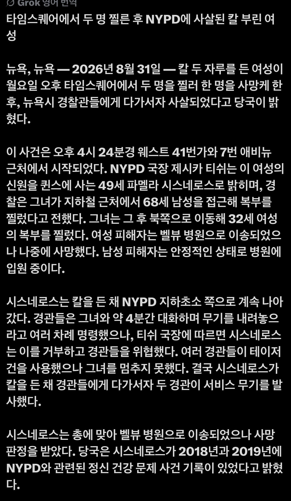

뉴욕 타임스퀘어에서 묻지마 칼부림
피해자는 남성 한명 여성 한명, 여성 피해자는 사망
가해자 여성은 경찰 무리에 저돌맹진하다
테이저건+총 맞고 사망

뉴욕 타임스퀘어에서 묻지마 칼부림
피해자는 남성 한명 여성 한명, 여성 피해자는 사망
가해자 여성은 경찰 무리에 저돌맹진하다
테이저건+총 맞고 사망
미국에서 정신병/마약/흑인 범죄자는 사실상 체제가 낳은 것들임 쟤네 욕하는 건 아무 의미 없음
와 저런 허술한 범죄자한테도 gta처럼 별이 막올라가서 경찰병력이 막투입되는구나 쪼끔 부럽네
뉴욕 타임스퀘어니까 저리 투입되지
테이저건 진짜 저게 정신력으로 버티는구나
자살 아니면 머리가 모지란년